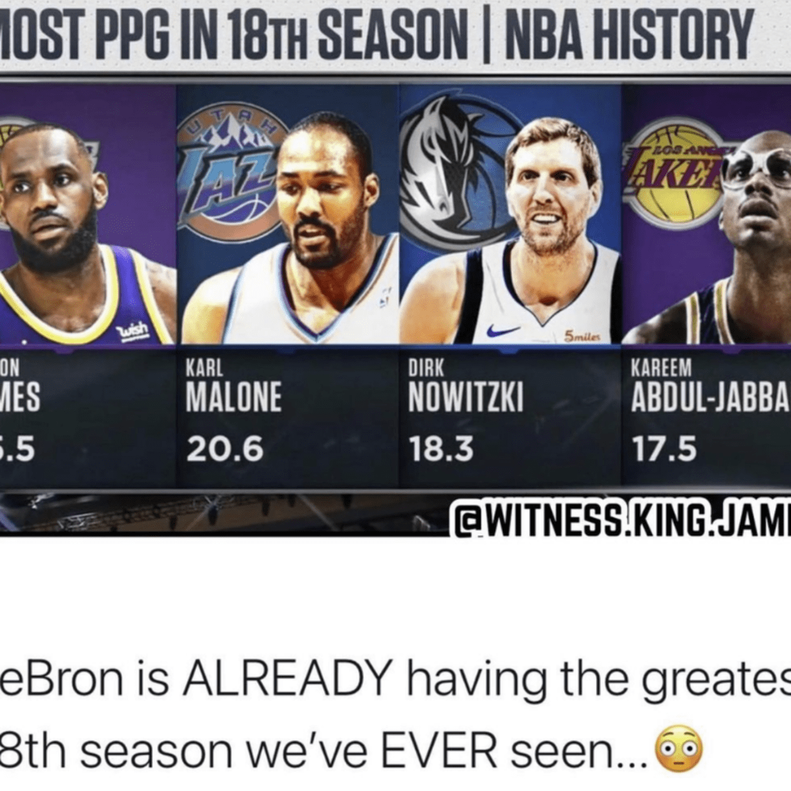
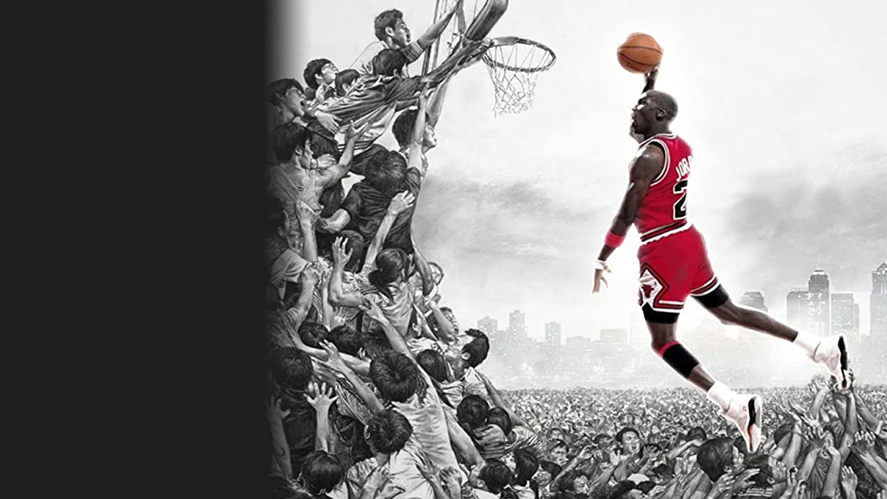

An age or debate that everyone should have some thoughts on, let's hear them.
Any Lebron fan, or basketball fan doesn't need to point the obvious on Lebron supernatural ability in the stats sheet, or the dominance the team has when he is on the court. After all, all those can be easily disregarded with a person who watches basketball in the different era. But we should focus on the things that are comparable, such as longevity. I believe what put Lebron on top is this longevity. Starting at 18 years old, he has played 51,524 min in his career, being the third highest minute played player of all time. Here is the kicker, he is still playing, in the highest level, while the other top 14 guys had long been retired. He is far from another older veteran player on the team right now, he is virtually playing the highest quality of basketball, from 19 years ago. This is the reason why this can easily put Lebron in the highest spot of basketball. On surface, the longevity shows his ability to take care of his body, the consistency in diets, and recovery method. But more importantly, it shows his far superior ability and mastering in the game of basketball, no matter how the game change, how offense and defense evolve, he will understand the game and understand how he can win regardless.
Have you seen the documentary; it is not even a debate. I think Jordan fans are usually insulted to even be such debate. Maybe they are holding on to their memories, maybe they have ideals on the sport of basketball that they don't will not accept the evolution. But they are for the reason that Jordon's impact on basketball is unparallel to any other player. Most people became Jordan fan simply by watching him play. Once you watch his game and how he impacts the game, you wouldn't even question his position at top. There is a reason why no other player has impact the game the way he did, and there is a reason why his game resonates with many basketball fan. His dominance doesn't come from having monster games, but by having almost all monster game. As a guard, his ability to manipulate the game terrified most teams in the league at that time. We have not seen another player that can do that, not even by close margin. This alone is already good enough to win the argument, the numbers and wins are nothing compare to the actually way he played. 